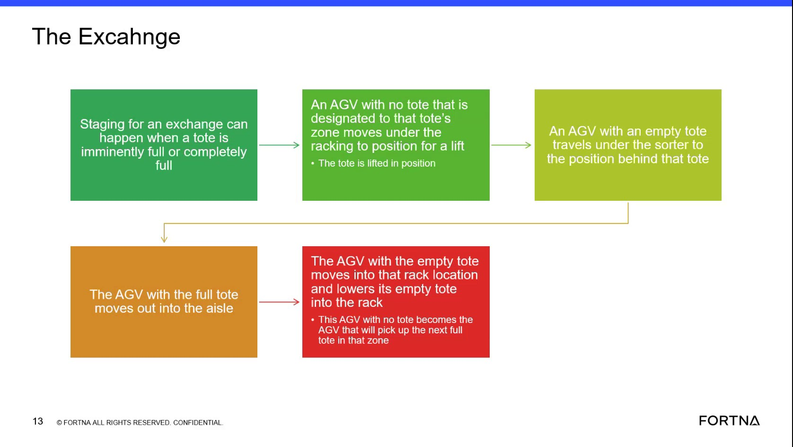

| Procedure ID | proc_interpret_chute_opening_timing_during_an_agv_exchange_v1 |
|---|---|
| Title | Interpret Chute Opening Timing During An AGV Exchange |
| Procedure Type | reference |
| Primary Role | operator |
| Support Safe | Yes |
| Validation Status | needs_sme_review |
| Merge Status | source_finalized |
Reference guidance for understanding documented chute opening timing during an AGV tote exchange. The source states that the chute opens when the AGV moves in, not when it drops a tote, and explains that this behavior is intentional to support faster exchanges and strict KPI targets.
Use this reference when observing or reviewing AGV tote exchange behavior and you need to confirm whether chute opening timing matches the documented training explanation.
Responsible role: operator
Instruction:
Observe the tote exchange and watch for when the chute opens relative to AGV movement.
Expected result:
The observer can identify the point in the exchange when the chute opens.
Screens / Images:

Stop or Escalate If:
Responsible role: operator
Instruction:
Check whether the chute opens when the AGV moves into position rather than waiting until the tote is dropped.
Expected result:
The observer can determine whether chute opening aligns with AGV move-in rather than tote drop.
Screens / Images:
Stop or Escalate If:
Responsible role: operator
Instruction:
Compare the observed timing to the documented behavior that chute opening occurs when the AGV moves in.
Expected result:
The observer can state whether the observed timing matches the documented behavior.
Screens / Images:
Stop or Escalate If:
Responsible role: operator
Instruction:
Record that this timing is intentional and is described as supporting strict KPI targets for faster exchanges.
Expected result:
The observer documents that the timing is intentional per the source and tied to exchange-speed KPI expectations.
Screens / Images:
Stop or Escalate If: